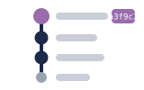
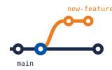
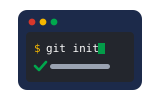
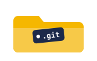
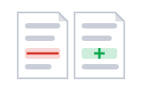

01Start · Make a repoinit
git init turns this folder into a repository that Git can watch.
git init — run once in the project root
Version control with Git · One project, from git init to push
Git is a time machine for your files. Every commit is a snapshot you can return to, compare or hand to someone else — and none of it needs the internet.

Snapshots have IDsA short hash names every commit
Parallel linesBranches let ideas grow apart safelyOne project in order: create the repo, work and track changes, save snapshots, branch out, share with others.

Space listen · ← → move · K show text
git init turns this folder into a repository that Git can watch.
git init — run once in the project root

Everything Git remembers lives inside one hidden folder called .git.
Delete .git and all history is gone — the files stay
When you are lost, run git status — it says where you are and what changed.
git status

git diff shows every line that changed before you decide anything.
git diff · git diff --staged
git add puts changes in the staging area — the waiting list for the next snapshot.
git add login.py (or git add . for everything)
git commit saves the staged changes as one snapshot, with a message that says why.
git commit -m "fix login timeout"
git log walks you backwards through every snapshot, newest first.
git log --oneline --graph
Undo is never scary here: git restore brings a file back from the last snapshot.
git restore login.py · undo a commit: git reset --soft HEAD~1
A branch is its own line of work, so an experiment can't break main.
git switch -c new-feature
Merging folds one branch's snapshots into another; a conflict is just Git asking who wins.
git switch main · git merge new-feature
A remote is the shared copy of your repo, usually on GitHub — everyone's work lives there.
origin = the default name of your remote
Clone copies a whole repo with history; push sends your commits out; pull brings other people's in.
git clone <url> · git push · git pull --rebase
Start with the traps — they are where most Git fear comes from.
Untrack it now: git rm --cached .env, put it in .gitignore, commit. If the repo was ever pushed, rotate the secret — history keeps old copies forever.
Staging is a promise about what belongs in the snapshot; add . promises everything.
Open a branch before every change: git switch -c fix-login. Merging your own small branch takes seconds and keeps mistakes off main.
main stays clean and reviewable; an accident stays quarantined on its side line.
Pull downloads other people's commits AND merges them into your work — that is where conflicts come from. Use git fetch to look first, merge when ready.
Download and integrate are two steps; pull quietly does both at once.
Almost never. git reflog lists every position HEAD has held; find the old hash and reset hard back to it.
git reflog · then git reset --hard <hash>
Git rarely deletes commits quickly — it moves pointers, and reflog remembers them.
git reset --soft HEAD~1 — the commit disappears and your changes wait in the staging area.
HEAD is where you are right now: which branch, on which commit. Undo commands are really about moving it.
The remote has commits you don't. Run git pull --rebase, fix any conflicts, then git push again.
Open the marked files, keep the lines you want, delete Git's marker lines, then git add each file and commit.
markers look like: <<<<<<< HEAD / ======= / >>>>>>> other-branch
Run git rm --cached for that file, add it to .gitignore, commit. The file stays on your disk.
git rm --cached <file> · then list it in .gitignore
Tap a word's play button to hear it. Hide one side, then recall it before you tap to check.
git init turns this folder into a repository that Git can watch. Everything Git remembers lives inside one hidden folder called .git.
git init — run once in the project root Delete .git and all history is gone — the files stay
When you are lost, run git status — it says where you are and what changed. git diff shows every line that changed before you decide anything. git add puts changes in the staging area — the waiting list for the next snapshot.
git status git diff · git diff --staged git add login.py (or git add . for everything)
git commit saves the staged changes as one snapshot, with a message that says why. git log walks you backwards through every snapshot, newest first. Undo is never scary here: git restore brings a file back from the last snapshot.
git commit -m "fix login timeout" git log --oneline --graph git restore login.py · undo a commit: git reset --soft HEAD~1
A branch is its own line of work, so an experiment can't break main. Merging folds one branch's snapshots into another; a conflict is just Git asking who wins.
git switch -c new-feature git switch main · git merge new-feature
A remote is the shared copy of your repo, usually on GitHub — everyone's work lives there. Clone copies a whole repo with history; push sends your commits out; pull brings other people's in.
origin = the default name of your remote git clone <url> · git push · git pull --rebase
Q. I ran git add . and committed everything — including my secrets.
A. Untrack it now: git rm --cached .env, put it in .gitignore, commit. If the repo was ever pushed, rotate the secret — history keeps old copies forever.
Q. I work straight on main because branching feels like extra work.
A. Open a branch before every change: git switch -c fix-login. Merging your own small branch takes seconds and keeps mistakes off main.
Q. I thought git pull just downloads files.
A. Pull downloads other people's commits AND merges them into your work — that is where conflicts come from. Use git fetch to look first, merge when ready.
Q. I deleted a commit by mistake — it is gone forever?
A. Almost never. git reflog lists every position HEAD has held; find the old hash and reset hard back to it.
A. git reflog · then git reset --hard <hash>
Q. How do I undo my last commit but keep the changes?
A. git reset --soft HEAD~1 — the commit disappears and your changes wait in the staging area.
Q. What exactly is HEAD?
A. HEAD is where you are right now: which branch, on which commit. Undo commands are really about moving it.
Q. My push was rejected. What now?
A. The remote has commits you don't. Run git pull --rebase, fix any conflicts, then git push again.
Q. A merge conflict appeared. Walk me through it.
A. Open the marked files, keep the lines you want, delete Git's marker lines, then git add each file and commit.
A. markers look like: <<<<<<< HEAD / ======= / >>>>>>> other-branch
Q. How do I stop tracking a file without deleting it?
A. Run git rm --cached for that file, add it to .gitignore, commit. The file stays on your disk.
A. git rm --cached <file> · then list it in .gitignore
Read git status again — it usually names the exact next command.
Git's own hint line is the map.
git log --oneline --graph --all shows where every branch really is.
See the whole map before touching anything.
git reflog finds commits you thought were lost.
The safety net for undo disasters.
Type git help, then any command name, to read its manual page offline.
The docs live in your terminal.
Say it in your head first, then tap the box to check.